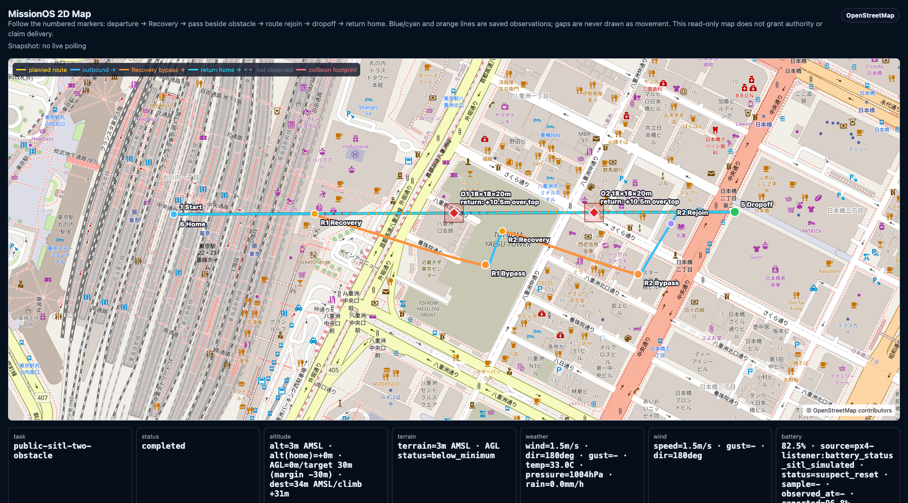
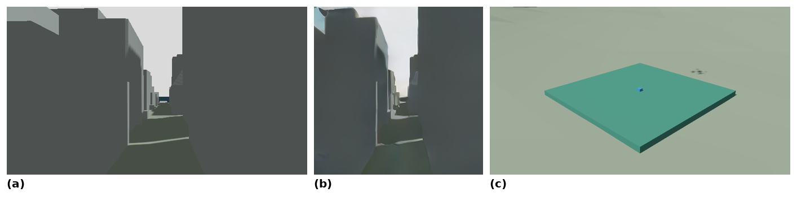
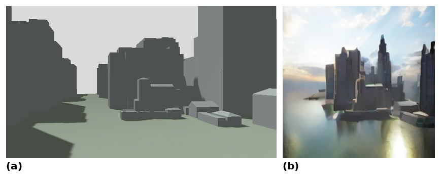
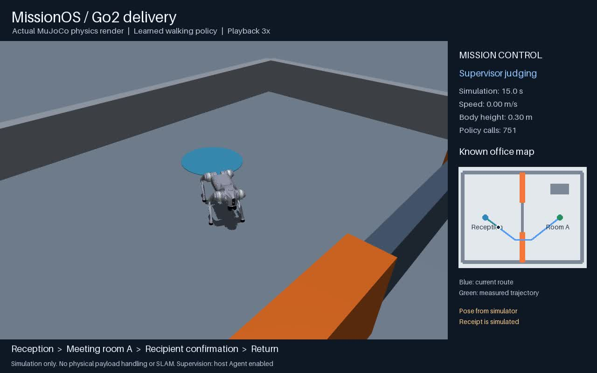
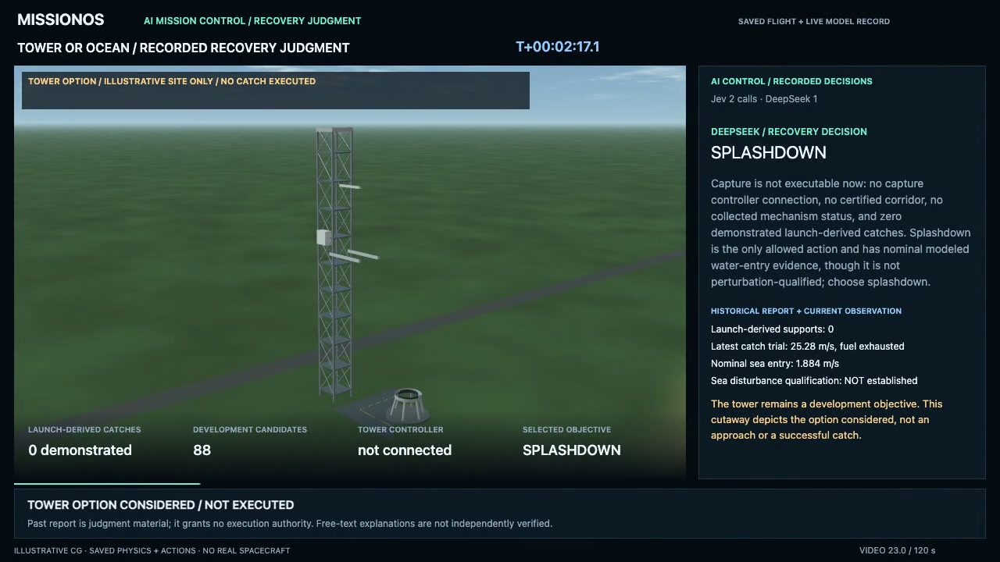
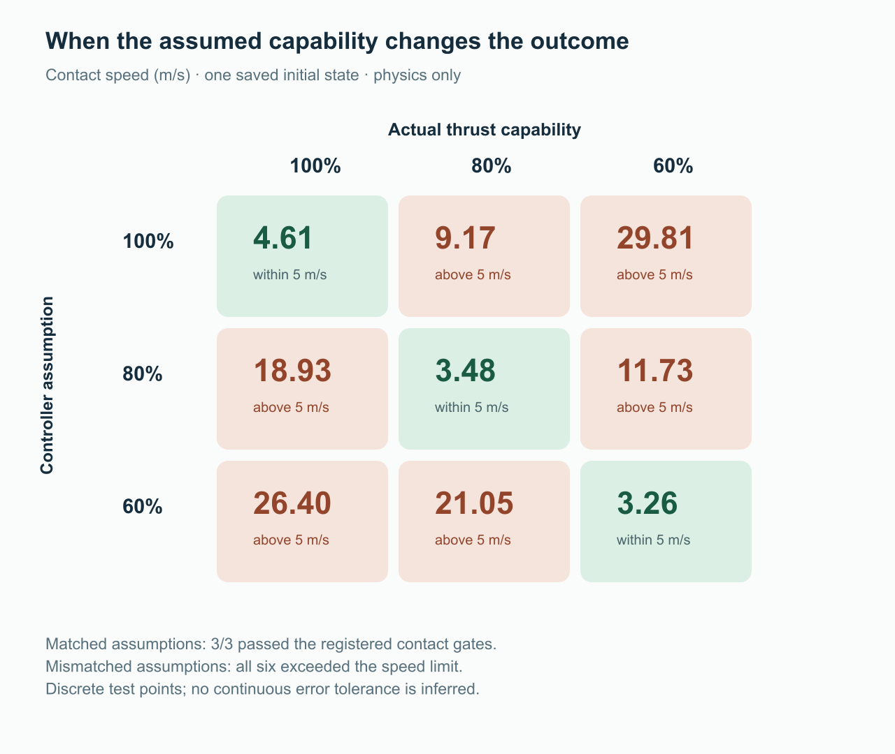

MissionOS：AI AgentとフィジカルAIを人の判断へつなぐ管制レイヤー
一人の人間が監督できる範囲を広げるための設計とシミュレーション事例
種別：技術報告（設計と開発記録）／未査読草稿
作成日：2026年10月29日
資料の基準：MissionOS公開リビジョン 56013c8bd656b77e707a65e691be0f8c6f050ca5 と、2026年10月28日公開の開発記録。
要旨
AIを搭載したドローンやロボットの能力を、人が継続的に運用できる能力へつなぐには、観測、状況判断、権限管理、結果検証を結びつける管制レイヤーが必要である。MissionOSは、人の目的と実行システムの間に管制AI Agentを置き、AIによる判断、人による承認、決定論的な実行制約、機体・ロボットによる動作、観測に基づく検証を接続する。本稿は、この設計と既存のシミュレーション記録を整理した事例研究である。ドローンの障害物回避と横浜3D都市モデル上の配送、屋内移動、四足歩行ロボットの待機・再計画、ブロック積みの継続・停止判断、操作失敗からの修復試行、Starshipを参考にした連続宇宙ミッションを対象とした。成果は、異種の実行系に共通する権限・証拠管理、修復を接触・条件成立・安定保持に分ける評価、能力推定を実行計画へ反映する診断付き管制の三点である。推力感度試験の九点では、想定と実際が一致する三条件が接触条件を満たし、不一致の六条件は速度上限を超えた。この結果を踏まえ、追加観測から能力を見積もり、その推定を帰還計画へ反映する構造を試験した。さらに、難解なメトリクス、大量のログ、画像、時系列変化を、根拠と不確実性を伴う人の意思決定へ翻訳する役割を、設計仮説として論じる。一人が監督できる任務数と認知負荷への効果は、今後の人間対象の比較評価で検証する。
キーワード： MissionOS、AI Agent、フィジカルAI、ミッション管制、人間と自動化、状況認識、実行権限、結果検証
1. はじめに
一人の人間が複数のドローンやロボットに目的を伝え、その活動を見渡し、必要なときに判断を下す。さらに長い時間軸では、ロケットの打ち上げから帰還までをAIとともに監督する。MissionOSの取り組みは、このような運用を支える管制レイヤーを構築することから始まった。
機体が自律的に飛べること、目的地まで歩けること、物をつかめることは、それぞれ重要な能力である。それらを任務として運用するときには、状態の変化を解釈し、工程を調整し、達成を確認する能力も必要になる。通路が塞がったときに待つか再計画するか、作業の一部だけが成功したときに何を保全して修復するか、異常な観測値が機体とセンサーのどちらに由来するか、といった判断である。
本研究の問題設定は、個々の機械の自律性が高まっても、状況の理解、工程の調整、例外への対応が人に集中すれば、運用の規模は人が監督に割ける注意の帯域に制約される、という点にある。MissionOSは、この負担を引き受ける管制AIを人と実行系の間に置く。人が目的と責任を保持しながら、観測情報の解釈、選択肢の比較、変更案の作成をAIに担わせることで、一人が意味のある監督を維持できる範囲を広げることを目指す。
本稿では、次の三つの問いを分けて扱う。
- RQ1：共通の運用構造。 異なる機体・モデルに対して、提案、承認、制約付き実行、観測、検証を共通の構造として接続できるか。
- RQ2：判断と結果の接続。 状況変化に応じたAIの判断を、許可された実行とその後の結果まで追跡できるか。
- RQ3：人の能力の拡張。 その構造は、人の判断負担を減らし、監督可能な任務数を増やすか。
既存の記録はRQ1とRQ2の限定された事例に回答する。RQ3は設計を方向づける仮説であり、人間を対象とした比較実験による検証が残っている。
2. 本稿の貢献
MissionOSの開発では、機体やモデルを任務として動かす過程で、権限をどう保つか、完了を何で判断するか、異常時に何を確かめるかという課題が具体化した。本稿は、その課題に対する設計と実行記録から、三つの貢献を示す。
- 異種の実行系に共通する権限・証拠管理。 ドローン、移動ロボット、ロボットアーム、宇宙ミッションに、提案、承認、実行制約、動作、結果確認を共通の構造として適用した。機体固有の動作を各実行系へ任せながら、誰が何を許し、何が起きたかを任務単位で管理する設計である。
- 接触・条件成立・安定保持に分ける修復評価。 修復試験では、対象に触れること、一時的に目標条件を満たすこと、その状態を保持することを別々に測定した。これによって、修復の到達段階と次に改善すべき能力を識別し、完了の判定に必要な条件を具体化した。
- 能力推定の感度試験と、それに基づく診断付き管制。 推力感度試験の九点では、想定と実際の一致が接触条件の成否を分けた。この結果を踏まえ、追加観測で原因候補を区別し、数値的に見積もった能力を計画へ反映する管制構造を実装・試験した。
これらの貢献を通じて、個々の機械が動作する能力から、人が複数の任務を継続して監督するための運用構造へ議論を進める。
3. MissionOSの設計
3.1. 任務を判断する層と動作する層
MissionOSは、機体にAIが搭載されているか、外部の計算環境でモデルを実行するかに依存しない上位の管制層を志向する。高速な姿勢制御、歩行、経路追従、ロボットアームの動作などは、それぞれの実行系が担う。管制Agentは、目的、現在の状態、実行可能な選択肢、残る制約を扱う。
対話の入口となるChief Agent、任務計画を扱う専門Agent、実行中の変化を扱うRecovery Agent、失敗後の修正を提案するRepair Agentは、判断と提案を担う。Gatewayは承認記録と実行条件を検査し、Executorへの送出を制約する。Verifierは、モデルの説明とは別に、観測された結果と定義された達成条件を照合する。［1］［2］
LLM judges. Human approves. Rules constrain. Executor acts. Verifier checks. Repair loops.
この原則は、AIの出力、人が許した範囲、実際に起きた変化を、それぞれ独立した事実として保持することを意味する。
図1. MissionOSにおける権限と情報の流れ。提案は記録された承認とRulesによる検査を経て実行され、観測と検証結果が次の判断へ戻る。各事例の共通構造を表す概念図。［1］［2］
図1のSVG版

3.2. 承認範囲と継続的な監督
人の承認は、具体的な目的、操作、対象、条件に結びつく。複数の工程が初めから承認された範囲に含まれていれば、工程ごとに新しい権限を作らず、その範囲の中で進められる。前工程の成功だけで次の操作への権限が生じることはない。条件の変化や承認期限の失効によって範囲から外れた場合には、実行を止めるか、変更案を人へ戻す。
親ミッションの実装では、段階の順序、実行系、子契約、各結果を評価する条件と承認を結びつける。PX4、Nav2、GR00Tを同じ親実行IDの下で順に動かした例では、各段階の限定された条件を満たした。一方、三つのシミュレーターは同じ世界や物体を共有していなかったため、親ミッション全体の完了は未検証とされた。［3］
3.3. 記録が区別する事実
MissionOSでは、少なくとも次の事実を分ける。
表1. MissionOSが区別して記録する事実と、その解釈。
| 事実 | 確認する内容 | その事実だけでは確定しない内容 |
|---|---|---|
| 提案 | AIが何を候補としたか | 人の承認、実行権限 |
| 承認 | 人がどの範囲を許したか | コマンド送信、動作成功 |
| 送出・受信応答 | 実行境界へ何を送り、何が受理されたか | 物理状態の変化、任務完了 |
| 実行中の観測 | 位置、状態、進捗がどう変化したか | 全達成条件の成立 |
| 検証結果 | どの達成・保全条件が確認されたか | 未観測の受け渡し、実機での安全性 |
| 修正提案 | 何を変更して次に試すか | 再実行への承認 |
この分離によって、失敗した場合にも、判断、権限、実行、観測のどこで期待と結果が分かれたかを調べられる。説明文が説得的であることと、任務が完了したことを混同しないための構造でもある。
4. 方法と資料
本稿は、保存済みの公開報告を用いる後ろ向きの事例研究である。公開資料を再読し、対象環境、AI呼び出しの有無、承認の方法、実行結果、検証範囲を対応づけた。本稿のための新たな機体動作、シミュレーション試験、実験用モデル推論は実施していない。
資料の読み取りには、次の三つの水準を用いた。
- 構造の確認： 提案、承認、実行、結果記録が接続されている。
- 対象条件での能力の観測： 特定の状態で行動や達成条件の変化が観測されている。
- 比較による有用性の評価： 条件をそろえた対照に対する改善が測定されている。
構造が動作したことから、モデルの能力改善や人の負荷低減を推定しない。異なる初期状態、観測条件、停止則、コード版、試行数を持つ結果は合算せず、共通の成功率も算出しない。以下で扱う動作と結果は、すべてシミュレーター内の証拠である。
公開リビジョンは資料の固定点であり、全実験がそのリビジョン上で実行されたことを意味しない。特にStarship統合試験は、公開報告が明記する過去の開発版 81c22072 の記録である。原記録の来歴と、公開資料を読んだ時点のコード版を区別した。［8］
5. 事例と結果
5.1. 飛行と屋内走行に共通する監督構造
PX4 / Gazebo SITLでは、経路の約50%と75%の地点にある二つの障害物に対し、別々のLLM提案と人による承認を経て回避動作を実行した。二回目の経路中心線への復帰と往復のテレメトリーが記録された。図2は、この二つの対応を同じ任務の経路上に示している。［1］

図2. PX4 SITLで観測された二つの障害物への対応。青・水色は往復の保存テレメトリー、橙色は個別の提案・承認を経た回避経路を示す。未観測区間は線種を分けている。背景地図：© OpenStreetMap contributors。［1］
横浜の3D都市モデル上では、市街地での判断に実際のVLAとWAMを接続した。貨物配送の飛行では、50 gの箱を積んだ機体が船から離陸し、片道1 kmの海上区間を自動操縦で移動した。市街地の二地点では、新しいカメラ観測からAeroVLAが短い移動を提案し、ANWMがその移動後の画像を予測した。提案は独立した建物形状のRulesと画像整合性の検査を通った後に送出され、機体は実測で3.01 mと2.73 m移動した。配送パッド上空で分離した箱は、パッド中心から0.013 mの位置に接触・静止した。模擬受領ステーションの受領記録を検証した後、機体は船へ戻って甲板に着陸した。飛行、モデル判断、荷物受領の三つの検証がすべて合格した。［15］
この飛行でモデルを起動するのは、市街地の承認済み保持地点だけであり、海上区間ではモデルへの要求を一度も出していない。VLAの応答には約17秒、WAMには約50秒を要し、その間は自動操縦で位置を保持した。時間のかかる実モデルの判断を任務の決まった区間に置き、それ以外を決定論的な制御に任せる配置である。

図3. 実VLA・WAMを用いた横浜の貨物配送。(a) 市街地D2での実観測、(b) AeroVLAの移動提案に対するANWMの予測画像（224×224）、(c) 受領後の配送パッド上の箱（青）。いずれも同じ実行の保存画像である。3Dシーン：横浜市・Project PLATEAU「3D都市モデル（横浜市、公開カタログ2024年度版）」（CC BY 4.0）を加工して作成。加工：MissionOS。［15］［13］
一方、別の試行では、WAMの予測が実観測と整合せず、移動の前に停止した。実観測は灰色の街路であったが、同じ位置に留まる候補の予測画像にも、観測にない水面や高層建物が現れた。事前に固定した画像基準を満たさなかったため、VLAが提案した移動は送出されず、移動の権限も発行されなかった。予測モデルが信頼できない場面で、管制が動かずに止まることを示す記録である。［16］

図4. WAMの予測が実観測と整合せず、移動前に停止した試行。(a) WAMに渡した直前の実観測、(b) 同じ位置に留まる候補に対するANWMの予測画像。予測には観測にない水面と高層建物が現れ、事前基準を満たさなかった。3Dシーン：横浜市・Project PLATEAU（CC BY 4.0）を加工して作成。［16］［13］
出発前の承認の扱いは、3D地図で配送先を選ぶ別の飛行で確かめた。運用者は、目的地、経路、シーン、実行環境に結びついた計画を承認する。マーカーを動かすと承認は無効になり、飛行中の目的地変更は拒否される。この飛行では元の発着場から10 m東の目的地へ配送し、帰還まで完了した。都市モデル側のVLA・WAMは固定応答で代替し、Jevが実際の判断を一回行った。［12］
TurtleBot3 / ROS2 Nav2では、部屋名を含むチャット要求を屋内移動へ接続した。仮想家屋の前庭から寝室まで三つの出入口を通過し、承認された経路と自己位置推定を補正した観測軌跡を対応づけた。［1］
これらの事例では、屋外飛行と屋内走行という異なる実行系に、目的の提示、提案の承認、動作、結果の観測という共通の運用構造を適用した。機体固有の操作を担う実行系と、任務を監督する層の役割分担が具体化された。横浜の事例は、実VLA・WAMの判断を海上の自動操縦と同じ任務に組み込み、配送と帰還まで通した。予測が崩れた試行では移動前に停止した。地図配送の飛行では、承認が目的地・経路・シーンの組に結びつき、その一部が変われば無効になることを示した。3.2節で述べた承認範囲の考え方を、最も直接に表す例である。
5.2. Go2における待機と再計画
Go2 / MuJoCoの配送事例では、通路の一時閉鎖を受け、DeepSeekによる実際の判断が二回行われた。最初は明示的な10秒間の待機を選び、その後は同じ承認済み目的地への再計画を選択した。提案はRulesの検査を通り、移動の再開、シミュレーション上の受領、受付への帰還、5秒間の終端保持が確認された。［4］

図5. Go2配送試験のシミュレーション時刻15秒における判断待ちの場面。ロボット、通路の閉塞、任務状態、既知の地図を同じ画面に示す。待機・再計画と後続の受領・帰還は、保存された判断記録と観測によって対応づけられている。［4］
判断時には、通路の再開見込みが施設通知として与えられていた。管制Agentは、この通知と現在の状態を待機案へ結びつけ、再観測後には再計画を提案した。変化を受けて一度待ち、情報を更新し、次の行動へ進む監督の循環を、移動再開と帰還まで通して確認した。
同じ公開報告には、動く障害物への局所的な停止・譲り合いを扱う別事例も含まれる。こちらのLLM判断回数は0回であり、実行系が担う局所的な対応の例として記録されている。二つの事例は、任務上の再計画と、動作中の局所調整を異なる層へ配置した設計を示している。
5.3. ブロック積みにおける予測と停止判断
ブロック積みでは、次の操作を行う能力に加え、積み上げた成果を保持するために停止を選ぶ判断を扱った。タスク専用のExtraTrees予測器またはニューラルACWMによる予測情報をDeepSeekへ渡し、人が事前に許した範囲、Rules、SmolVLAによる実行、観測に基づく結果確認を接続した。［5］［6］
ExtraTrees統合では既知の二ケースで8点と8点、別の二ケースを用いたニューラルACWM統合では9点と4点が保持された。このExtraTrees統合の値は、最初の実行（5点と8点）を確認した後、判断指示の点数比較の記述だけを修正して同じ二ケースで再実行したものであり、未知のケースでの評価ではない。両統合のケース群は異なるため、それぞれの実行記録として整理する。ニューラルACWM事例では、推論を待つ間に物理シミュレーションを停止する設定を用いた。
対照との関係も保存した。ExtraTrees統合の同じ二ケースに対する決定論的な停止則は8点と9点であり、ニューラルACWM統合の全15判断は既存の閾値方策と一致した。ニューラルACWMを用いた二ケースでは、継続と停止の選択を既存の閾値方策でも再現できた。
この結果から得られる設計上の知見は、予測を判断材料にする機能と、その材料から行動を選ぶ機能を分けて考えることである。予測と停止条件の関係が規定されている場面では、ルールが選択を担える。管制AIに判断を委ねる場面としては、原因候補の競合や観測の不足など、既存の判定条件をそのまま適用できるかが問題になる状況に焦点を当てる。Starshipの異常診断との関係を6.3節で論じる。
5.4. 操作失敗の修復と安定した完了
ロボットアームの修復研究では、任務の一部が成功した後、残る失敗を修正しつつ、すでに満たした条件を保全することを課題とした。［7］
GR00Tの同一世界での修復試験では、世界をリセットせず、新たな契約と人の承認の下で限定された実行を行った。観測後に手続きを修正した単回実行コホートでは、五つの修復ループのうち対象条件の改善が観測されたものは0件であった。修復提案を承認して実行する経路と、実行後に残った未達条件を同じ記録で確認した。
Cosmos PolicyとVLA-0については、保存状態を復元した診断用MuJoCoクローン上で比較した。これはGR00Tの承認付き修復ループとは別の評価であり、同じ保存状態、3 cmの診断用変位、指示、128動作の上限を用いた。特権的な対照制御器が3回とも修復後の20ステップ保持を満たした条件で、Cosmos Policyは対象への接触に至らなかった。
VLA-0は3試行とも接触し、2試行で一時的に全条件を満たした。一時的に全条件を満たした軌跡二本を固定動作で再生すると、両方とも静止保持の5ステップ目で修復条件を失い、20ステップの安定完了は0/2であった。
本試験では、一時的な条件成立から安定した完了までの間に、保持の失敗が存在した。接触・条件成立・安定保持という三段階の評価によって、修復がどこまで進み、どの能力が不足したかを識別できた。したがって修復の完了判定には、到達した瞬間の状態に加え、動作終了後の保持期間を含める必要がある。
5.5. Starshipを参考にした連続宇宙ミッション
宇宙ミッションでは、前の判断が次の工程の条件を変える。ペイロードを保持すれば帰還する機体の質量が変わり、軌道上での待機は利用できる資源や時間に影響する。MissionOSでは、打ち上げ、段分離、ペイロード放出、帰還計画、異常診断、接触時の検証を連続した研究用シミュレーションとして扱った。［8］［9］
その基盤となる6自由度モデルは、並進と回転、推力、燃料消費、質量特性、制御面を結びつける。前工程で生じた状態と保持ペイロードの在庫を後工程へ引き継ぐことで、判断の結果が帰還条件に反映される構成とした。
Shipの帰還は、接触速度5 m/s以下、傾き5°以下、機体の回転0.02 rad/s以下、残燃料28 t以上を条件とした。AIを用いない決定論的な共通の帰還制御は、保持ペイロード0〜26基の27条件と、保持0・14・15・16・25・26基で初期燃料を±1,000 kg変えた12条件の、計39条件すべてでこれらの合否基準を満たした。観測された値は、最大接触速度4.691 m/s、最大傾き2.755°、最小残燃料45.231 tである。AIによる再計画の成功回数ではなく、事前に定めた有限の条件で帰還制御の範囲を確認したものである。［17］
同じ研究系列の10月14日の記録では、ブースター回収を対象に、DeepSeekが承認済みの捕捉開発報告と現在の観測を読み、タワー捕捉ではなく着水を選んだ。捕捉制御器が未接続で、打ち上げから続く捕捉の実証も0回であったため、実行可能な選択肢は着水のみであった。この選択は独立した実行検査を通り、後続の観測で確認された。同じ飛行で、Shipは26基分のペイロードを放出したが、Ship側の軌道比較の条件は未完了のまま残った。［14］

図6. 2026年10月14日のブースター回収判断の記録（再生映像の23秒時点）。右側にDeepSeekの判断「SPLASHDOWN」と、その判断材料を示す。タワーは検討した選択肢を示す説明用の描画であり、接近や捕捉は実行していない。表2の10月23日統合試験とは別の記録である。［14］
帰還計画の再選択は、三つの条件で試した。いずれも26基分のペイロードを放出し、飛行中に人が指示を出すことなく帰還まで実行した。通常の条件では、当初の帰還機会で接触した（4.608 m/s）。回収側の状況更新を与えた条件では、予定していた回収エリアが取り下げられ、当初の接触地点は新しい通知の利用可能な範囲と時間から外れた。Jevは約90.85分後の別の帰還機会を選び、その計画が実行された（4.613 m/s）。判断系が応答しない条件では、検査済みの代替手順が同じ後続の帰還機会へ切り替えた（4.613 m/s）。判断系の停止は模擬した障害であり、この条件ではJevを一度も呼び出していない。回収エリアは過去の予測から較正した開発用の目標であり、三条件は事前に固定した開発用の場面である。未知の条件への一般化を示す試験ではない。それでも、状況が変わったときに計画全体を選び直す判断と、AIが応答しないときに検査済みの手順で任務を続ける経路の双方を、同じ構造で扱えることを示した。［17］
帰還の時刻も、結果を大きく変える。AIを使わずに帰還要求の時刻だけを60秒ずらすと、接触時の速度や傾きはほぼ同じまま、接触は約40.7秒遅れ、接触地点は約278 km移動した。帰還計画は、接触時の運動状態だけでなく、どこに、いつ降りられるかで評価する必要がある。［19］
AI診断の導入に先立ち、制御側が想定する推力と、シミュレーターの実際の推力を分けた感度試験が行われた。100%、80%、60%の組合せによる九つの有限試験点では、想定と実際が一致する三条件は登録された接触条件を満たし、不一致の六条件は5 m/sの接触速度上限を超えた。図7に、各組合せの接触速度を示す。［10］［11］

図7. 同一の保存初期状態から継続した、AIを使用しない九点の物理計算。行は制御側の想定推力、列は実際の推力、数値は接触速度（m/s、小数第2位に丸め）。緑色は5 m/sの速度上限内、淡赤色は上限超過を示す。［11］
この九点では、接触条件の成否は想定と実際の一致によって分かれた。実際の推力が同じ80%でも、制御側が80%と見積もった場合は3.48 m/sで接触し、100%と見積もると9.17 m/s、60%と見積もると21.05 m/sとなった。実推力60%でも見積りが一致すれば条件を満たし、実推力100%でも見積りが異なれば速度上限を超えた。異常時の管制には、現在の機体能力を把握し、計画と制御の前提を更新する役割がある。
この感度を踏まえ、症状から推進能力を見積もり、加速度センサーの誤差という別の説明候補とも区別するために、独立した追跡観測を利用する構造が加えられた。数値計算が物理的な候補を評価し、AIが情報の追加要求や対応案を選び、独立した検査を通った変更を実行系へ渡す。［10］
2026年10月23日の統合試験では、実際のモデル呼び出し、推進能力低下の注入、追加観測の要求、能力推定の採用、帰還時の接触までを同じ任務で接続した。主要な記録を表2に示す。
表2. 2026年10月23日の単一統合シミュレーションの記録と測定条件。
| 項目 | 記録された値・動作 | 測定対象・試験条件 |
|---|---|---|
| Jev応答 | 10呼び出し中10回の有効応答 | 当該任務で有効と判定された応答数 |
| DeepSeek応答 | 1呼び出し中1回の有効応答 | 当該任務で有効と判定された応答数 |
| ペイロード | 13基分を放出、13基分を保持 | 模擬ペイロードの在庫と質量を後続計画へ継承 |
| 異常への対応 | 推進能力低下の症状から独立追跡を要求し、数値推定の採用を選択 | 模擬故障注入と実モデル呼び出しを使用 |
| 変更の適用 | 独立検査後に一度だけ適用 | 症状対応のフォールバック0回、API再試行0回 |
| Shipモデルの接触 | 3.459 m/s、残推進剤51.209 t | モデルが接触した時点の状態 |
| 登録された監督区間 | 1,304.871秒／上限1,800秒 | 事前定義した区間の実経過時間 |
| CLI全体 | 2,140.761秒 | 前後の保存記録検査を含む全実経過時間 |
| 承認 | 認証されたテスト用スクリプトから供給 | 承認主体をスクリプトとした承認経路の試験 |
出典：［8］。実行版は過去の開発版 81c22072 である。公開版への移植後に、同じ飛行を再実行したものではない。
試験履歴には、前日の10月22日に登録された時間上限を超え、2,143.796秒を要した結果も残されている。10月23日の便は前日とは別に登録した実行であり、前日の結果と分けて記録した。実行定義の変更を記録し、それぞれの結果を元の条件に結びつける方法を採用した。両便ともJev 10/10、DeepSeek 1/1、13基放出・13基保持で、公開値の丸め範囲では接触速度も約3.46 m/sであった。10月23日の便は、スリープ防止を加えて新しく登録した実行であり、22日の時間超過はそのまま残している。同じ10月23日の初回準備では、保存済み4記録の帰還資格確認を別作業として行ったが、履歴のサイズが上限を超えて開始前に停止した。この確認作業では飛行を行っていない。その後、履歴を分割して照合する方法で4記録すべての履歴を再構成し、上限1,800秒の内側（996.768秒）で確認を通過した。ただし、これに続く通常の許可経路の検証は、空き容量が下限に届かず開始前に停止しており、いずれの記録も公開版を資格づけるものではない。［8］［17］
この統合試験では、保持したペイロードの質量と、異常後に見積もり直した推進能力を帰還計画へ反映し、接触まで実行した。ここで管制Agentが担ったのは、観測された症状から不足する情報を特定し、追加観測を求め、数値評価を使って採用する能力推定を選ぶことである。診断を、説明の生成から後続計画の前提を更新する工程へ組み込んだ点に、本事例の成果がある。
Starshipの研究系列には、成立しなかった記録も残している。10月6日の開発記録では、Jevの応答が不正と判定され、事前に承認された代替手順で放出を停止した試行が、1基を放出し25基を保持した状態で619.78 m/sの衝突に至った。AIを使わずに運用中断の通知を与えた台本の試行も、同じく1基放出・619.78 m/sの衝突で終わっている。AIを使わない試行でも同じ結果になったことから、AIの応答の不正だけで衝突を説明することはできない。衝突は、資格確認前の当時の帰還制御が、25基を保持した状態での帰還を成立させられなかった結果として記録されている。［18］［20］ 終盤のエンジン停止を与えた試験では22.735 m/sで衝突し、燃料不足の条件では帰還が禁止されたまま未解決である。打ち上げ由来の保存状態から60秒間継続したブースター帰還試験では、残燃料3.569 tが予備の基準6.918 tを下回り、条件を満たさなかった。この失敗は、AIの応答の検証だけでなく、代替手順と、その先で用いる帰還制御の実行可能性を検証する必要性を示した。その後の契約では、恒常的な制約が許す限り、不受理または未応答のAI応答は承認済みの通常の放出手順と当初の帰還計画を維持し、自動的に放出を止めたり別の帰還誘導へ切り替えたりしない形に改めた。［20］
5.6. 事例横断で確認できたこと
表3. 各事例で接続した機能と、管制レイヤーとして得られた成果。
| 事例 | 観測された接続 | 管制レイヤーとしての成果 |
|---|---|---|
| PX4 / Gazebo | 二つの障害物への提案・個別承認・回避観測 | 状況変化から回避結果までを任務の履歴として保持 |
| 横浜3D都市モデル | 実VLA提案・実WAM予測・Rules・海上AP・荷物の分離と受領・帰船 | 実モデルの判断を任務の限られた区間に置き、予測が不整合なら移動前に停止 |
| TurtleBot3 / Nav2 | 部屋名の要求・承認経路・観測された走行 | 利用者の目的を機体固有の移動機能へ接続 |
| Go2 / MuJoCo | 実モデルによる待機・再計画、受領・帰還の検証 | 待機と再観測を含む監督の循環を最後まで実行 |
| ブロック積み | 予測情報・実モデル判断・制約付き動作・停止後の確認 | 閾値方策との判断一致から、予測と行動選択の役割を分離 |
| 操作失敗の修復 | GR00Tの承認付き修復試行と、別途の診断用比較 | 接触・条件成立・保持によって修復の到達段階を識別 |
| 親ミッション | 異なる三実行系を一つの承認・記録の系列へ接続 | 工程の順序と権限・結果の関係を共通に管理 |
| Starship参考モデル | 連続任務内の観測・判断・模擬承認・変更・接触検証、帰還機会の再選択 | 能力見積りと帰還時刻の感度を示し、診断と帰還機会の再選択を計画更新へ組み込み |
以上の事例は、機体ごとの実行能力を、任務単位の監督へ接続するというMissionOSの設計を具体化している。各構成要素の出力を受け渡すだけでなく、何が提案され、どの範囲で実行され、何が観測されたかを対応づけることが、共通の管制構造として機能した。
6. 考察
6.1. 一人が監督できる範囲を広げる条件
管制経路を実行した事例に共通するのは、人が目的と許容範囲を定め、AIが状況を解釈して選択肢を整理し、実行系が許可された動作を担うという分担である。異なる機体やモデルを同じ種類の権限・証拠管理へ接続できたことは、RQ1を支える。Go2とStarshipの事例は、変化に応じた実モデル判断を後続の動作と結果まで追跡できたという範囲で、RQ2を支える。ただし、Starship統合試験では人の承認に相当する経路をテストスクリプトが代行している。
この分担が機能すれば、人は任務の優先順位や例外時の判断に注意を向けられると期待できる。一人が監督できる範囲を広げるためには、機械の処理能力に加えて、人に戻す判断の質と量を設計する必要がある。
承認要求が機械の数に比例して増えるだけなら、人は再び限界に達する。だからこそ、何を事前に任せられるのか、どの変化で再承認を求めるのか、判断に必要な情報をどうまとめるのかが、管制レイヤーの中心的な課題になる。
6.2. 複雑な情報と人の状況判断をつなぐ架け橋
6.1節で挙げた三つの課題のうち、判断に必要な情報をどうまとめるかに関わるのが、管制AIによる情報解釈と提示である。運用中には、難解なメトリクス、大量のログ、画像、時系列の変化を突き合わせ、その関係と任務全体への影響を把握する必要がある。この処理を人だけに集中させる構造では、観測情報の増加が監督の負担に直結する。
MissionOSが目指すのは、この読み解きを管制AIが担い、「何が起きているのか」「何が分かり、何がまだ不確かなのか」「各選択肢を取ると何が起こり得るのか」「人は何を決める必要があるのか」を、根拠とともに伝えることである。
例えば推進異常では、加速度の低下という観測だけでは、推進能力の低下とセンサー誤差を区別しにくい。管制AIは、競合する説明と、それぞれを確かめる観測を整理する。人へ戻す判断には、採用する見積り、その根拠、計画への影響、承認範囲の変更点を添える。複雑な情報を、任務について判断できる単位へまとめることが、この層の役割である。
判断材料が不足する場合には、追加観測の取得も提案する。Starshipを参考にした試験で、推進能力の低下の症状を受けて独立した追跡観測を要求した事例は、この情報取得の過程を具体化している。［8］ 本稿では、高度なシステムの複雑さを人が判断できる形へ翻訳するという機能を、RQ3に関わる設計仮説として位置づける。図8に、その情報の流れを示す。
図8. RQ3に関わる情報提示の設計仮説。管制AIが観測を整理し、必要に応じて追加情報を取得し、選択肢と将来の影響を人の意思決定へつなぐ。
図8のSVG版

情報提示の設計では、読みやすさと証拠への追跡可能性を両立させる必要がある。本稿では、説明に対象時刻、観測元、推定の不確実性、矛盾する観測を結びつけ、要約や解釈の誤りを人が点検できる提示方法を設計要件とする。7.2節の比較評価では、負担の変化とともに、誤った提示に対する検出・修正の能力を測定する。
6.3. 管制AIが判断すべき場面
ブロック積みとStarshipの対比は、管制AIをどの判断に配置するかを考える根拠になる。5.3節のニューラルACWM事例では、予測に基づく全15判断が閾値方策と一致した。予測値と停止条件から選択を定められる場面では、既存のルールが同じ判断を担えた。
一方、5.5節の推進異常では、同じ症状に推進能力の低下とセンサー誤差という複数の説明候補があり、独立した追跡観測が判断材料となった。管制AIの価値を評価する焦点は、こうした説明候補の競合を整理し、何を追加で観測すればよいかを選び、得られた結果から計画の前提を更新する過程にある。
Starshipの再計画実験は、この方針の別の面を示す。回収エリアの取り下げという前提の変化に対して、管制AIは帰還機会を選び直した。判断系が応答しない場合には、検査済みの代替手順が同じ選択肢の中から帰還を続けた。前提が変わったときの再選択をAIに担わせ、AIが使えないときの継続を決定論的な手順に担わせることで、どちらの場合も任務を止めずに済む。一方、619.78 m/sの衝突の記録は、Rulesを通った判断や検査済みの代替手順であっても、その先の帰還制御が実行可能であるとは限らないことを示している。判断の妥当性と実行の可能性は別の検証対象であり、管制層は両方を確かめる必要がある。
この対比から、既知の条件に対する判定はルールに担わせ、観測の不足や前提の変化を扱う判断を管制AIに担わせる設計方針が得られる。修復試験で明らかになった接触・条件成立・安定保持の区別も、この方針に関わる。Verifierが到達段階を判定し、管制AIは残った失敗に対して何を確かめ、どの修正を提案するかを扱う。
Starship研究では、成功した軌道がどのような姿勢・空力の仮定に支えられていたかも検討された。過去の成功軌道に見られた斜めの流れに依存する釣合いを調べ、帰還制御と物理モデルを見直した経緯が報告されている。［10］ AIの判断を評価するには、その判断に結果を返す環境についても、検証できる仮定を示す必要がある。
7. 限界と今後の評価
7.1. 本稿の限界
第一に、本稿は限定されたシミュレーション事例の整理である。機体、初期状態、観測、承認方式、評価条件が異なり、単一の成功率や実運用上の安全性を導けない。
第二に、人間の認知負荷、判断時間、監督可能台数は測定していない。Starship統合試験の承認はテストスクリプトによるものであり、人間が同じ情報を理解して適切に判断できることは別途検証が必要である。
第三に、モデル応答の有効性、動作生成、任務の達成、対照に対する改善は別の指標である。修復の陰性結果や閾値方策との一致を含め、AIの一般的な優位性は確立されていない。
第四に、推論待ち中のシミュレーター停止や、簡略化した物理・環境モデルは、遅延や外乱が継続する実環境とは異なる。Starship参考モデルには、実機に同定された空力、構造柔軟性、スロッシング、熱防護の検証が含まれていない。ブースターの受入範囲は開発用の10 kmであり、発射から続くタワー捕捉は未達成である。これらの条件と、実行したコード版が結果の適用範囲を定める。
7.2. 人の監督能力を測る比較実験
次の評価では、同じ任務群、同じ観測経路、同じ実行権限を用い、次の三条件を比較することが考えられる。
- 直接監督： 人がダッシュボードとログを読み、対応を判断する。
- ルールによる支援： 決定論的な警告・集約表示が、人に情報を提示する。
- 管制AIによる支援： 根拠付きの状況説明、選択肢、追加観測の提案を提示する。
表4. 人の監督能力を評価するための比較指標案。
| 観点 | 指標の例 | 評価の目的 |
|---|---|---|
| 任務の成果 | 同じ時間・制約下で完了した任務数、保全条件違反 | 処理量の増加と結果の質を同時に確認する |
| 判断の質 | 原因の識別、対応の妥当性、異常の見逃し・誤警報 | 判断の正確さと説明の理解しやすさを併せて評価する |
| 人の負担 | 介入回数、介入時間、承認待ち件数、主観的負担 | 情報整理が負担を減らすか確認する |
| 状況の理解 | 現在の重要な変化、その意味、将来の見通し、承認範囲の理解 | 判断を支える状況認識が維持されるか確認する |
| 遅延と資源 | 観測から判断・実行までの実時間、推論費用 | 物理時間が進む条件で成立するか確認する |
| 追跡可能性 | 根拠の特定、誤った事実帰属や提示への検出・修正率 | AIの説明を人が点検し、必要に応じて修正できるか確認する |
問題設定には、同じ症状に複数の原因があり、追加情報によって望ましい対応が変わる状況を含める。訓練・開発に使わない条件を分け、シミュレーター内部の真の原因と実行後の結果を採点に使う。初めから答えが明白なケースだけで判断能力を評価しない。
人間対象の比較では条件の順序や学習効果を調整し、必要な試行数と主要評価指標を事前に定める。監督する任務数を増やしたときの見逃しや承認待ちの増大も測る。この比較によって初めて、「一人の能力を広げる」という仮説を、具体的な運用上の効果として評価できる。
8. 結論
本稿は、人の注意と判断が集中する運用上の課題に対し、管制AIを人と実行系の間に置くMissionOSの設計と試験を報告した。成果は次の三点である。
第一に、ドローン、移動ロボット、ロボットアーム、宇宙ミッションへ共通の権限・証拠管理を適用した。機体固有の実行能力を活かしながら、提案、承認、制約付き実行、結果確認を任務単位で管理する構造を示した。
第二に、修復を接触・条件成立・安定保持に分ける評価を示した。一時的な達成の後に保持が崩れる事例から、動作の到達点と任務の完了を分けて測る必要性を具体化した。
第三に、推力感度試験の九点で、想定と実際の一致が接触条件の成否を分けることを示し、追加観測と能力推定を計画更新へ組み込む診断付き管制を試験した。異常への対応では、現在の能力を見積もり直すことが、後続の制御と実行を成立させる課題となった。
こうした管制の考え方は、ソフトウェア上のAI Agentにも通じる。目的に沿って複数のツールを使い、状況に応じて計画を変えるときには、権限、制約、実行結果を結びつける仕組みが必要になる。フィジカルAIでは、その結果が移動、接触、燃料消費などとして現れるため、この関係をより具体的に扱うことになる。
次の研究課題は、この管制構造が一人の人間の監督能力をどの程度広げるかを測ることである。複雑な観測情報を根拠とともに理解可能な形へ整理し、人が目的と責任を保ちながら、より多くの任務へ関われるようにする。MissionOSは、そのための運用構造と評価基盤を具体化してきた。
開発体制とAIの利用
MissionOSの実装と本稿の執筆は、CodexとClaudeを主な開発・執筆の担い手として進めた。GrokとGeminiには、設計や記述に対する助言を求めた。
出典・実験記録
- MissionOS Project. MissionOS README. 公開リビジョン56013c8b.
- MissionOS Project. MissionOS Agent Roles. 同リビジョン.
- MissionOS Project. Parent mission control. 同リビジョン.
- MissionOS Project. Go2 delivery experiment report. 2026-09-25. 同リビジョン.
- MissionOS Project. Stacking mission E2E. 同リビジョン.
- MissionOS Project. ACWM governed stacking report. 2026-09-21. 同リビジョン.
- MissionOS Project. Manipulation VLA Repair progress: GR00T, Cosmos Policy, and VLA-0. 同リビジョン.
- MissionOS Project. Integrated Starship mission: what is demonstrated. 同リビジョン.
- MissionOS Project. A coupled six-degree-of-freedom spacecraft model. 同リビジョン.
- Astropome AI. (2026-10-28). Building MissionOS: AI Mission Control, Tested from the Physics Up. 公開開発記事.
- Astropome AI. (2026-10-28). Publication provenance and saved evidence for the MissionOS development story. 図版来歴・保存数値資料.
- MissionOS Project. Yokohama 3D map delivery. 同リビジョン.
- 横浜市・Project PLATEAU. 3D都市モデル（横浜市、公開カタログ2024年度版）. CC BY 4.0. G空間情報センター.
- MissionOS Project. Recorded booster recovery judgment. 2026-10-14. 同リビジョン.
- MissionOS Project. 荷物を運び、届けて、船へ帰る（横浜・実VLA＋WAM）. 同リビジョン.
- MissionOS Project. 横浜街区で実VLA＋WAMを実行：予測画像が不整合で停止. 同リビジョン.
- Astropome AI. (2026-10-22, updated 2026-10-28). Mission-Level Replanning in a Starship-Inspired Simulator. 公開研究記事.
- MissionOS Project. Starship mission director: recorded development results, 2026-10-06. 同リビジョン.
- MissionOS Project. Starship return replanning. 同リビジョン.
- MissionOS Project. Starship mission decisions. 同リビジョン.
付録A. 資料と図版の来歴
本文はMarkdown、図1・図8は編集可能なMermaidとして保存した。対応するSVGも同梱する。図2・図5・図6は固定された公開リポジトリの画像を変更せず複製し、図3・図4は同リポジトリの保存画像の大きさを調整して並べ、(a)〜(c)の記号を加えた。図7は公開済み開発記事の図を変更せず複製した。生成した概念図を実験映像として扱っていない。
表5. 図版の種別と来歴。
| 図 | 種別 | 出典・位置づけ |
|---|---|---|
| 図1 | 本稿で作成した概念図 | 権限と情報の流れ。出典1・2・3に基づく抽象化 |
| 図2 | 保存観測の表示画像 | MissionOS公開READMEに掲載された二障害物回避地図 |
| 図3 | 保存画像の合成 | 実VLA・WAMによる横浜の貨物配送。出典13・15 |
| 図4 | 保存画像の合成 | WAM予測の不整合で移動前に停止した試行。出典13・16 |
| 図5 | シミュレーター映像の静止画 | Go2のAgent判断を含む配送試験。出典4 |
| 図6 | 保存記録の再生画像 | 2026年10月14日のブースター回収判断。出典14 |
| 図7 | 保存された数値による既存図 | AIを用いない九点の推力感度試験。出典10・11 |
| 図8 | 本稿で作成した概念図 | 情報を人の状況判断へ結びつける設計仮説 |
固定リビジョンから取得した報告本文とURL・Git blob識別子は sources/repository-sources.json に保存した。画像・記事資料の取得元とSHA-256は sources/download-manifest.json に記録した。これらは公開資料の取得・同一性を示すもので、原実験の全ログを再検証した証明ではない。個別の試験条件と原記録への参照は各公開報告に従う。
図7のSHA-256は公開元の来歴資料と照合し、一致を確認した。図2の背景地図の帰属表示は原図内に保持している。図3・図4の3D都市モデルは横浜市・Project PLATEAUのデータ（CC BY 4.0）を加工したもので、帰属を図注と出典13に記載した。地図データの利用条件はOpenStreetMapの著作権・ライセンス案内を参照されたい。
ライセンス。 本文と、本稿で作成した図（図1・図8）は、CC BY 4.0で提供する。図に含まれる第三者のデータは、それぞれの条件に従う。図2の背景地図はOpenStreetMapのデータに基づくもので、本稿のライセンスの対象外とし、OpenStreetMapの条件に従う。図3・図4の3D都市モデルは、横浜市・Project PLATEAUのCC BY 4.0の条件に従う。図4(b)と図3(b)の予測画像は、ANWM（重みはApache 2.0で公開）が本研究の実行中に生成したものである。図5のGo2のロボットモデルは、公開パッケージ（rl_sar_zooのgo2_description、Apache 2.0と表示）を用いた。製品名・モデル名は、使用した対象を指すために記載したもので、各権利者との提携や承認を示すものではない。